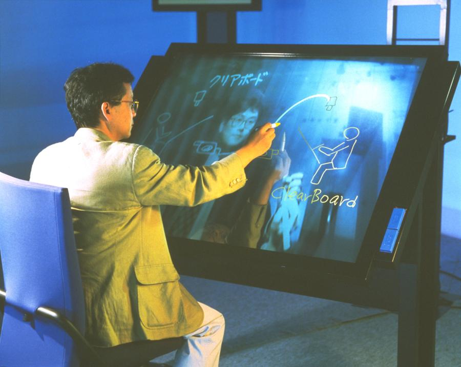

NTT ClearBoard-1
A shared glass drawing surface where your collaborator appears as a ghostly face, maintaining eye contact through a half-silvered mirror.

Overview
ClearBoard-1 is a shared drawing medium created by Hiroshi Ishii and Minoru Kobayashi at NTT Human Interface Laboratories in 1991, published at CHI 1992. Unlike every other collaborative drawing system of its era, ClearBoard-1 required no computer for the drawing itself — users drew with physical marker pens on a large glass pane. The key innovation was a half-silvered mirror positioned at a 45-degree angle behind the glass, with a video camera behind it. This optical arrangement superimposed the remote collaborator's live video face onto the shared drawing surface, creating the illusion that you were drawing on the same piece of glass as your partner while looking at them through it. Critically, it maintained eye contact and 'gaze awareness' — you could see where your partner was looking on the shared workspace, a capability lost in standard video conferencing. Ishii described the metaphor as 'talking through and drawing on a transparent glass window.' The system used a 'Drafter-Mirror' architecture: two CCD cameras (one for face capture, one for the drawing surface), a video mixer, and the half-silvered mirror. ClearBoard-1 was succeeded by ClearBoard-2 (1994), which added computer-integrated drawing tools via the TeamPaint editor. The original ClearBoard-1 is held in the ICC (NTT InterCommunication Center) Tokyo permanent collection.
Deep dive
The optical heart of ClearBoard-1 was a half-silvered mirror at a 45-degree angle behind the glass drawing surface. One CCD camera captured the user's face (looking 'through' the mirror from behind), while another captured the drawing surface from above. A video mixer combined the two feeds, and the resulting image was transmitted to the remote site, where it was rear-projected onto the partner's glass board. The half-silvered mirror meant the user saw both their own markers on the glass AND the projected image of their partner's face AND their partner's markers. One quirk: images were mirror-reversed by the optics, requiring video correction to make text appear correctly oriented. The system also had to correct for the fact that one user always saw a mirrored image — an inherent consequence of the 'looking through the same glass' metaphor.
Ishii and Kobayashi identified 'gaze awareness' as a critical missing feature in computer-supported cooperative work. Standard shared whiteboard systems let you see what your partner is drawing, but not where they are looking. Standard video conferencing lets you see your partner's face, but not what they're working on. ClearBoard integrated both: the partner's face appeared superimposed on the shared workspace, so looking at the drawing and looking at your partner were the same act. This was not a feature — it was a consequence of the optical design. The CHI 1992 paper argued that this integration of 'interpersonal space' and 'shared workspace' was essential for seamless remote collaboration.
ClearBoard was Hiroshi Ishii's breakthrough project at NTT Human Interface Laboratories. After its publication at CHI 1992 and CSCW 1992, Ishii joined the MIT Media Lab, where he founded the Tangible Media Group and developed the 'Tangible Bits' vision (published at CHI 1997). ClearBoard's philosophy — that the physical configuration of an interface shapes collaboration in ways no software feature can replicate — directly informed his later work on tangible user interfaces. ClearBoard-1 was exhibited at ICC Tokyo in 2000 as part of Ishii's 'Open Studio: Tangible Bits' exhibition, and ClearBoard-2 was shown at SIGGRAPH 1994.
Team & pioneers
- Hiroshi Ishii. Lead researcher, NTT Human Interface Laboratories; later founded MIT Media Lab's Tangible Media Group
- Minoru Kobayashi. Co-creator, NTT Human Interface Laboratories
- Jonathan Grudin. Co-author on CSCW 1992 extended paper
- Kazuho Arita. Co-author on ClearBoard iterative design paper (CACM 1994)
Media
Sources
- CHI 1992: ClearBoard: A Seamless Media for Shared Drawing and Conversation with Eye-Contact
- CSCW 1992: Integration of Inter-Personal Space and Shared Workspace
- ICC Tokyo Collection: ClearBoard-1
- MIT Tangible Media Group: ClearBoard Project Page
- Hiroshi Ishii Classic Page: ClearBoard Overview
- CACM 1994: Iterative Design of Seamless Collaboration Media (ClearBoard-1 and -2)